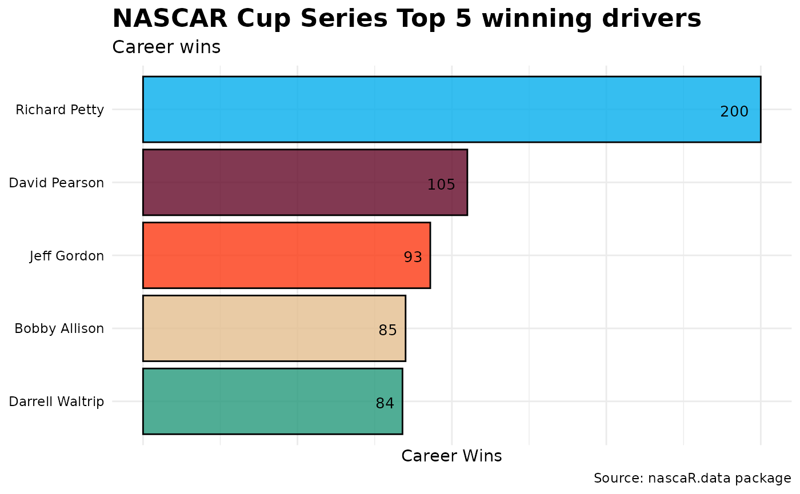
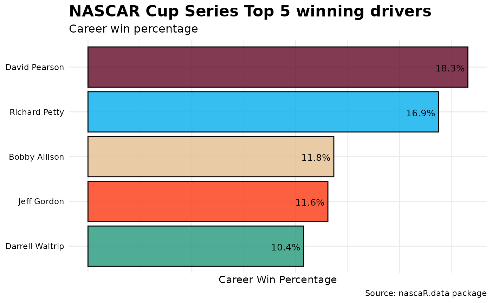
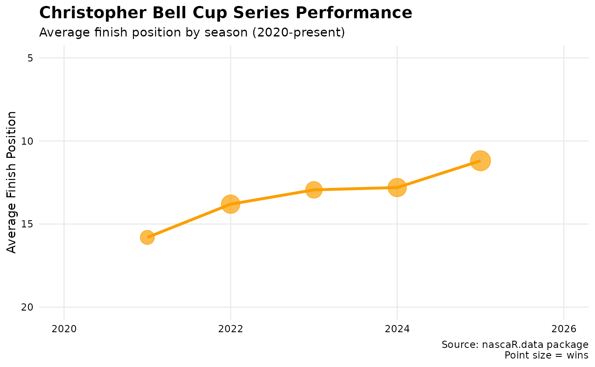
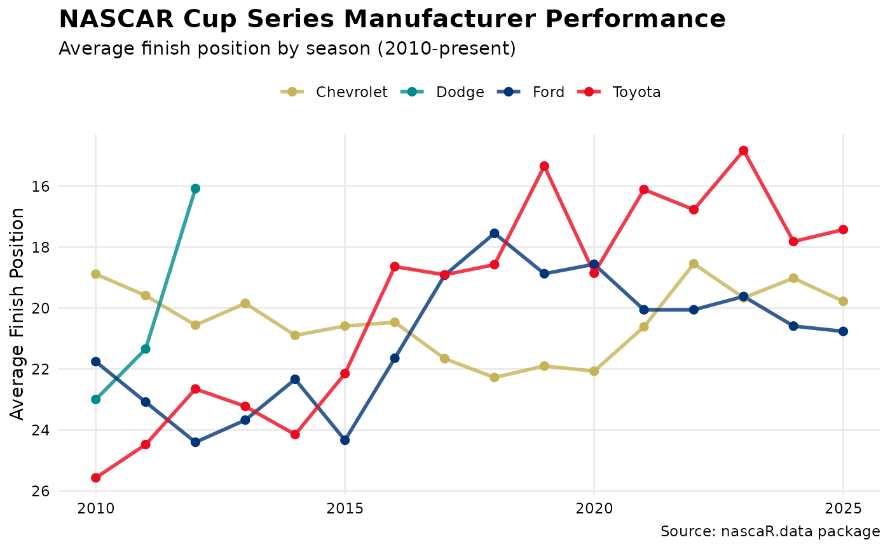

A Race Winning Strategy
Kyle Grealis
December 1, 2024
Source:vignettes/a-race-winning-strategy.Rmd
a-race-winning-strategy.Rmd## [conflicted] Will prefer dplyr::filter over any
## other package.In the Pits
NASCAR is one of the top-tier racing sports in North America and
competes against F1 and IndyCar for the top viewership spot.
Approximately 3.22 million people watch a race on any given weekend
throughout the season. The nascaR.data package is the
result of wanting to share a passion for the sport and provide an option
to the typical go-to packages when learning new data visualization
tools.
nascaR.data is packed full of NASCAR results dating back
to the first Daytona Beach race in 1949! Use this package to discover
race trends across the NASCAR Cup Series, NXS (formerly Xfinity Series),
and Craftsman Truck Series. Answer questions like “which driver has the
best average finish at short tracks?”, “how has a team’s performance
changed over time?”, or see which manufacturer has dominated which
series in a certain season. It’s all here, so let’s strap in to our race
seats, fire up those engines, and let’s take some warm-up laps.
Warming up the tires
nascaR.data provides access to 3 datasets with
race-by-race results for each NASCAR series, plus 3 helper functions to
make exploring the data easier. Let’s check our gauges and see what’s
under the hood:
library(nascaR.data)
# Load data from cloud storage
cup_series <- load_series("cup")The package provides data for three series via
load_series(): - load_series("cup"): NASCAR
Cup Series races from 1949-present - load_series("nxs"):
NASCAR NXS races from 1982-present - load_series("truck"):
NASCAR Truck Series races from 1995-present
Each dataset contains race results with 21 columns including driver,
team, manufacturer, finishing position, laps led, and more. Use
?load_series to view a complete list of variable
descriptions.
The package also provides helper functions with built-in fuzzy
matching to quickly analyze drivers, teams, and manufacturers: *
get_driver_info(), get_team_info(),
get_manufacturer_info(): Get career statistics
Green Flag!
Which drivers are in the Top 5 for wins in the NASCAR Cup Series?
First, calculate total wins for each driver. Then, organize the drivers in descending order by wins, subset to keep the Top 5 winningest drivers, and feed the data into a horizontal bar chart (some other tweaks will be applied to enhance the visual output).
cup_series |>
group_by(Driver) |>
summarize(career_wins = sum(Win, na.rm = TRUE)) |>
arrange(desc(career_wins)) |>
slice_head(n = 5) |>
ggplot(aes(Driver, career_wins)) +
geom_bar(stat = "identity") +
coord_flip()
Wow! This doesn’t even look like a close race. Richard Petty clearly leads the field with 200 wins. However, let’s take a drive a little deeper into the turn and account for the number of races each driver competed in. What if we compare these same five drivers by win percentage?
cup_series |>
group_by(Driver) |>
summarize(
career_wins = sum(Win, na.rm = TRUE),
total_races = n(),
win_pct = career_wins / total_races
) |>
arrange(desc(career_wins)) |>
slice_head(n = 5) |>
ggplot(aes(Driver, win_pct)) +
geom_bar(stat = "identity") +
coord_flip()
Accounting for total races run, we see a different story emerge. David Pearson’s win percentage leads the pack at 18.3%, followed by Richard Petty at 16.9%. Imagine how many more wins Pearson would have accumulated if he had competed in as many races as The King.
Modern driver performance: Analyzing race results
Let’s shift gears and look at how modern drivers stack up. The
Win column in our datasets makes it easy to filter for race
victories and analyze performance trends.
# Get all wins for a specific driver
bell_wins <- cup_series |>
filter(Driver == "Christopher Bell", Win == 1) |>
arrange(desc(Season))
# How many Cup Series wins?
nrow(bell_wins)## [1] 13Christopher Bell has 13 Cup Series victories. Let’s compare his performance across different track types to see where he excels.
# Average finish by track surface
cup_series |>
filter(Driver == "Christopher Bell", Season >= 2020) |>
group_by(Surface) |>
summarize(
races = n(),
avg_finish = round(mean(Finish, na.rm = TRUE), 1),
wins = sum(Win, na.rm = TRUE),
laps_led = sum(Led, na.rm = TRUE)
) |>
arrange(avg_finish)## # A tibble: 4 × 5
## Surface races avg_finish wins laps_led
## <chr> <int> <dbl> <dbl> <int>
## 1 road 31 13.4 3 121
## 2 dirt 3 14 1 100
## 3 paved 180 14.7 9 2492
## 4 NA 2 16 0 4Road courses show a strong average finish, but let’s visualize performance trends over time to see the full picture.
# Visualize season-by-season performance
cup_series |>
filter(Driver == "Christopher Bell", Season >= 2020) |>
group_by(Season) |>
summarize(
avg_finish = mean(Finish, na.rm = TRUE),
wins = sum(Win, na.rm = TRUE)
) |>
ggplot(aes(Season, avg_finish)) +
geom_line(color = "#fb9f00", linewidth = 1.2) +
geom_point(aes(size = wins), color = "#fb9f00") +
scale_y_reverse() +
theme_minimal()## Warning: Removed 1 row containing missing values or values outside the scale range
## (`geom_line()`).## Warning: Removed 1 row containing missing values or values outside the scale range
## (`geom_point()`).
The trend shows consistent improvement, with better average finishes in recent seasons. Lower numbers are better, so a reversed y-axis makes this clearer.
The Garage Area
Which manufacturer has the best performance by season?
Let’s go behind the pit wall and see what the manufacturers are up to in the Cup Series. We’ll look at average finish position to get a comprehensive view of performance.
cup_series |>
filter(Season >= 2010) |>
group_by(Season, Make) |>
summarize(avg_finish = mean(Finish, na.rm = TRUE)) |>
ggplot(aes(Season, avg_finish, group = Make, color = Make)) +
geom_line() +
geom_point() +
scale_y_reverse()
Toyota and Chevrolet have been trading competitive positions, with both showing strong performance in recent years. Ford has shown improvement since 2015, while Dodge exited the series after 2012.
Comparing team performance across manufacturers
How do top teams compare when driving for different manufacturers? Let’s look at Joe Gibbs Racing’s transition from Chevrolet to Toyota.
cup_series |>
filter(Team == "Joe Gibbs Racing", Season >= 2000) |>
group_by(Season, Make) |>
summarize(
races = n(),
wins = sum(Win, na.rm = TRUE),
avg_finish = round(mean(Finish, na.rm = TRUE), 1),
.groups = "drop"
) |>
select(Season, Make, races, wins, avg_finish)## # A tibble: 26 × 5
## Season Make races wins avg_finish
## <int> <chr> <int> <dbl> <dbl>
## 1 2000 Pontiac 68 10 9.9
## 2 2001 Pontiac 72 5 13.3
## 3 2002 Pontiac 72 4 16.2
## 4 2003 Chevrolet 73 4 15.5
## 5 2004 Chevrolet 77 2 15.1
## 6 2005 Chevrolet 107 5 19.3
## 7 2006 Chevrolet 108 7 17.1
## 8 2007 Chevrolet 109 4 16.8
## 9 2008 Toyota 109 10 14.5
## 10 2009 Toyota 111 9 16.5
## # ℹ 16 more rowsJoe Gibbs Racing switched to Toyota in 2008, and the performance data tells the story of that partnership’s success over the following years.
Using the Helper Functions
The nascaR.data package includes helper functions to
make data exploration easier. These functions handle fuzzy matching, so
you don’t need to type exact names.
Getting driver statistics
# Get comprehensive driver statistics (handles fuzzy matching)
get_driver_info("bell", series = "cup", type = "summary")The get_driver_info() function provides three types of
output: * 'summary': Career totals by series *
'season': Season-by-season breakdown * 'all':
Complete race-by-race results
# Season-by-season performance
get_driver_info("Christopher Bell", series = "cup", type = "season")Analyzing teams and manufacturers
The same helper functions work for teams and manufacturers:
# Get team statistics (fuzzy matching built in)
get_team_info("gibbs", series = "cup", type = "summary")
# Get manufacturer performance across all series
get_manufacturer_info("Toyota", series = "all", type = "season")These functions make it quick to explore the data without memorizing exact spellings or worrying about capitalization.
Practical example: Comparing multiple drivers
Let’s use the helper functions to compare several drivers’ performance at a specific track.
# Compare drivers at Martinsville (short track)
drivers_to_compare <- c("Christopher Bell", "Kyle Larson", "William Byron")
martinsville_comparison <- cup_series |>
filter(
Driver %in% drivers_to_compare,
Track == "Martinsville Speedway",
Season >= 2020
) |>
group_by(Driver) |>
summarize(
races = n(),
wins = sum(Win, na.rm = TRUE),
avg_finish = round(mean(Finish, na.rm = TRUE), 1),
avg_start = round(mean(Start, na.rm = TRUE), 1),
laps_led = sum(Led, na.rm = TRUE)
) |>
arrange(avg_finish)
martinsville_comparison## # A tibble: 3 × 6
## Driver races wins avg_finish avg_start laps_led
## <chr> <int> <dbl> <dbl> <dbl> <int>
## 1 Kyle Larson 10 1 6.2 7 332
## 2 William Byron 12 3 10.5 10.7 664
## 3 Christopher Bell 12 1 14.8 15.2 184This comparison shows how different drivers perform at the same track, accounting for starting position, finishing position, and laps led.
The Backstretch
This vignette gives you a foundation for exploring NASCAR data with
the nascaR.data package. Use load_series() to
access comprehensive race results for all three series, while the
get_*_info() helper functions make data exploration
straightforward with built-in fuzzy matching.
There’s plenty of opportunity to further analyze the data:
- Compare performance at different track types (oval, road course,
superspeedway)
- Analyze how rule changes affected competition
- Track the evolution of manufacturer dominance over decades
- Examine the relationship between qualifying position and race
results
- Study how teams perform with different drivers
The data is updated regularly throughout the season, so you’ll always have access to the latest race results. Whether you’re creating visualizations, building models, or just exploring NASCAR history, this package has you covered.